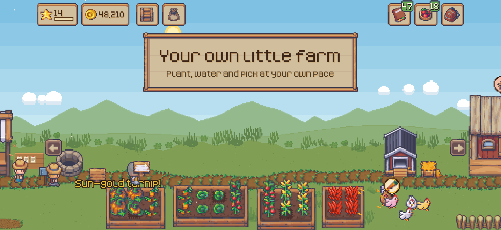

Support

Thimble Acre is a small, cosy farm game for iPhone. Grow crops, raise and breed animals, and fill the Coat Book.
Need a hand?
If something isn't working, or you have a question about your farm, write to kennyjallison@gmail.com. Please say which iPhone you have and what you were doing when it happened. A screenshot helps a lot.
Common questions
How do I learn what everything does?
Open the Menu and tap How it works. Mabel also explains each new thing the first time you meet it.
I bought the Full farm on another iPhone.
Open Settings, then Farm, and tap Restore. Purchases are tied to your Apple Account and shared with Family Sharing.
A visitor code doesn't work.
Visitor codes need an internet connection and an iPhone signed in to iCloud. Each code works on one farm, once, within two days of being made.
Is my farm saved?
Yes, on your iPhone, as you play, and in your iPhone backups. Deleting the app deletes the farm.